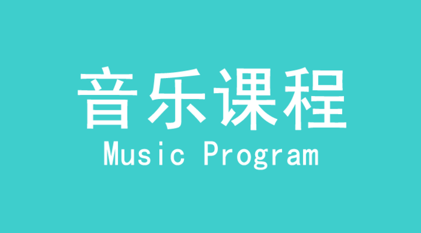

音乐课程系列 Music Program
运动音乐、敲击音乐、环球音乐、美育音乐
LUCKYBABY幸运宝贝早教机构极具特色的课程设计和富有国际化的打击乐演奏，将带领您和宝宝走进音乐交织起的梦幻国度，感受世界各地不同的音乐风格，体验不同地域文化带来的奇妙环球之旅。
【运动音乐】
LUCKYBABY幸运宝贝早教机构通过对音乐被动性的接触，结合有趣的音乐游戏来开发宝宝的音乐潜能。增加宝宝愉悦情趣以及学习音乐的兴趣。
【敲击音乐】
LUCKYBABY幸运宝贝早教机构带领宝宝一起感受世界音乐以及室内打击乐，学会演奏多种乐器并进行不同音乐风格的体验。
【环球音乐】
LUCKYBABY幸运宝贝早教机构让宝宝不出国门就能亲身体验到来自于国际上各种不同元素以及风格的环球音乐，并让宝宝亲自演绎和尝试各国音乐风情。
【美育音乐】
LUCKYBABY幸运宝贝早教机构让宝宝感受和领略来自宝岛台湾的音乐文化，走进最原生态的台湾儿童经典音乐。通过各种军队的演奏，学习多声部合奏，和分角色演奏，倾听音乐理解生活，感受无限乐趣。